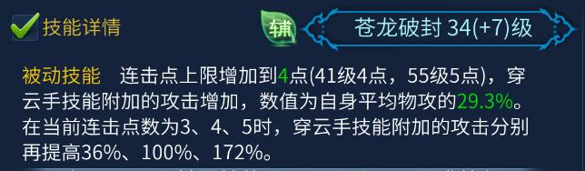

苍龙破封对穿云手主要加成详解
作者：[小黑猪]
- 苍龙破封对穿云手加成详解
- 穿云手伤害公式
Tip
注意：结论，会放在本文开头；测试及分析，会放在结论之后。建议非战斗人员只阅读结论即可…….
苍龙破封对穿云手加成详解

上图为41级苍龙破封的技能描述，我就以此为例子进行讲解，先假设攻击为10000-30000，那么平均攻击就为20000，再假设穿云手物理部分技能描述6000
苍龙破封技能描述中的29.3%，这部分加成是基于平均攻击的，即20000*29.3%=5860
连击点加成中所说的连击点，指的是当前连击点，比如说，你连击点上限是4点，而此时只累了3连击点就使用了穿云手，那么效果也就只有3连击点的效果
本文核心机密连击点附加的攻击加成（36%、100%、172%），其实加成了两个部分：1）第①部分中的29.3%的平均攻击。2）穿云手的技能描述比如，4连击点时加成100%，那么连击点的加成量则为（5860+6000）*100%=11860穿云手流血部分的加成方式完全相同 因此在这个例子中，苍龙破封+连击点对穿云手物理部分的加成总攻击为：11860+5860=17720
说到这里，说句题外话，以上内容都是测试出来的结论……是完全能经得起验证的，楼主在测试之前，对苍龙破封的理解有不少误区，首先，我以为连击点的加成是基于平均攻击而言，这样算出来的结论，就会显得偃师攻击收益特别高，但事实并非如此，以4连击点为例子，偃师每提升1点平均攻击，对应是提升了1.6的平均攻击，这在所有职业中，就只能算是中上水平。其次，楼主在做测试前，从来没想过，苍龙破封可能对穿云手技能描述进行加成，而现在就明显能看出来，穿云手技能等级十分重要。
穿云手伤害公式
由于公式有点长，我先设个A1和A2分别代表物理部分和流血部分
A1=(技能物理部分描述+平均攻击*苍龙百分比）
A2=(技能流血部分描述+平均攻击*苍龙百分比）
物理部分伤害=A1*(1+连击点加成）+面板攻击+对方物防
流血部分伤害=A1*(1+连击点加成）*0.9+面板攻击*0.8+对方物防
那么有
A1=（5525+23658*29.3%）=12456.8
A2=（3195+23658*29.3%）=10126.8
物理部分最小伤害(PVP)
(A1*2+面板最小攻击-对方物防)*0.15=(12456.8*2+15123-10000)*0.15= 4506
物理部分最大伤害(PVP)
(A1*2+面板最大攻击-对方物防)*0.15=(12456.8*2+32193-10000)*0.15= 7066
流血部分最小伤害(PVP)
(A2*2*0.9+面板最小攻击*0.8-对方物防)*0.15=(10126.8*2*0.9+15123*0.8-10000)*0.15= 3049
流血部分最大伤害(PVP)
(A2*2*0.9+面板最大攻击*0.8-对方物防)*0.15=(10126.8*2*0.9+32193*0.8-10000)*0.15= 5098
所以我的偃师号，打物防10000，没有减伤的职业，物理部分伤害为4506-7066，流血部分伤害为3049-5098，瞬间伤害在7555-12164（该数据并未考虑致命和减伤的影响）